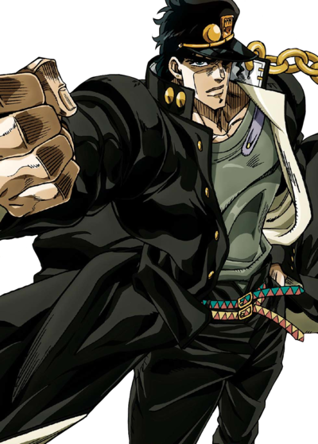

Introduction
This is the third part of JoJo's Bizarre Adventure. From March 1989 to April 1992 the series was published in Weekly Shonen Jump. The anime adaptation was animated in 1993 OVA series and the next 2014 anime series newly animated.
Plot
Jotaro Kujo is known for his calm, collected demeanor, and often appeals indifferent or unapproachable. Despite his tough exterior, he cares deeply for his loved ones. He is highly intelligent and stragegic, using his wits to overcome various challenges!
From 1988 to 1989, the story follows Jotaro Kujo and his allies he made along the way from Tokyo to Cairo to save his mother's life by defeating a familiar face from the past.
In 1983 near the Canary Islands, tresure hunters bring up a casket with a familiar name on it. Days later, the ship was found with no one where to be seen and the coffin with no one inside.
The story takes place in the year of 1988 in Tokyo Japan when Joseph Joestar visits his daughter named Holy Kujo after her son was put in jail for beating up 4 people and refuses to leave his cell because he is possessed by an evil spirit. This "evil spirit", Is known as Stand. This awakening of an old foe that was freed in the casket, he is the reason for the awakening of Stands.
The awakening of the Stands resulted in many people in recieving ablitities while this could be a blessing but not many people could handle the neccessary willpower to control one. This did fall upon on Jotaro Kujo poor mother. Inorder to cure this disease, they would have to travel to Egypt to defeat an old enemy from the past. They have 55 days before Holy Kujo will die.
The adventure with Jotaro Kujo, Joseph Joestar, and allies they made on there way to defeat an old enemy from the past! The location they travel from Tokyo to Cairo. They visit many locations in the Southeast Asia as well the Middle East with many cities near the Nile.
Major Characters
Jotaro Kujo
Joseph Joestar

Muhammad Avdol
Noriaki Kakyoin
Iggy
Jean Pierre Polnareff
Holy Kujo

Suzi Q Joestar

Who is the enemy of the past???
Click this text to be spoiled!

References
Weekly Shonen Jump 1991 Issue #31 March 18, 1991

The Great Sphinx Pyramids of Gizeh July 17,1839 A: David Roberts

Weekly Shonen Jump 1989 Issue #23

"Patterns and Textures in Hand kits", G.Q. Magazine 1984 A: Antonio Lopez

Stands
The stands of the everyone will remain a secret!